Simulation & Optimization
Overview
This graduate course project focuses on machine learning optimization through hands-on implementation of neural networks from scratch, without relying on high-level frameworks like PyTorch or TensorFlow.
Projet 1 — Neural Network from Scratch
I implemented a fully functional neural network classifier using only Python and NumPy, without any deep learning frameworks. The network uses a two-layer architecture (input → hidden → output) with configurable activation functions, weight initialization strategies, and optimization algorithms.
Architecture
- Input layer: 2 features
- Hidden layer: 30 neurons (configurable)
- Output layer: 3 classes (softmax)
- Loss function: Cross-entropy
- Optimizers: SGD (mini-batch) and Newton's method
SGD Implementation
The core training loop implements mini-batch stochastic gradient descent with backpropagation:
while min(loss) > 10 and epoch < epochs:
for i in range(0, data_arr, batch_size):
x_train1 = data[i:i + batch_size]
y_train1 = y[i:i + batch_size]
# Forward pass
y_pred = self.call(x_train1)
# Cross-entropy loss
delta = 1e-7
loss[epoch] = -np.sum(y_train1 * np.log(y_pred + delta))
# Backpropagation
dz2 = self.s - y_train1
dw2 = self.hiden_layer1.T.dot(dz2)
da1 = dz2.dot(self.w2.T)
dz1 = (1 - self.hiden_layer1) * self.hiden_layer1 * da1
dw1 = x_train1.T.dot(dz1)
# Variable learning rate schedule
if method == 'variable':
learning_rate = initial_lr * (1 - epoch * 10 / epochs)
# Weight update
self.w1 -= learning_rate * dw1
self.w2 -= learning_rate * dw2
epoch += 1Hyperparameter Study
I systematically investigated the impact of key hyperparameters on convergence speed and final accuracy:
Learning Rate
Tested fixed learning rates from 1e-1 to 1e-4. A learning rate of 1e-1 achieved the best convergence performance, while smaller values led to significantly slower training.
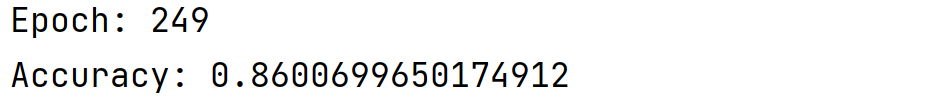
LR = 1e-1 — fast convergence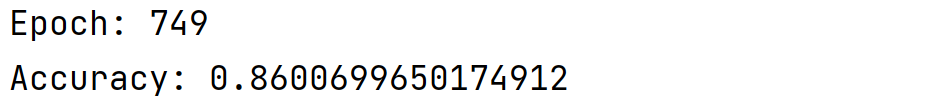
LR = 1e-2 — slower convergence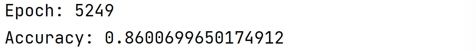
LR = 1e-3 — very slowWeight Initialization
Compared three initialization strategies: zeros, ones, and random. As expected, random initialization broke symmetry and enabled effective learning, while zero and one initializations failed to differentiate neurons.
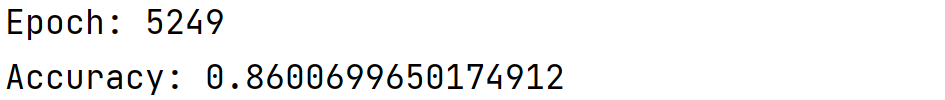
Ones — poor convergence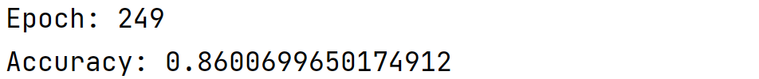
Zeros — symmetry problem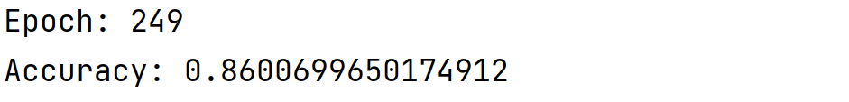
Random — best performanceBatch Size
Tested batch sizes of 32, 64, and 128. Larger batches led to slower convergence per epoch but smoother loss curves, while smaller batches introduced more noise but updated weights more frequently.
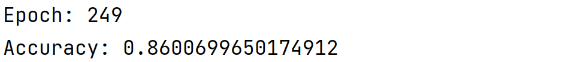
Batch = 32 — more noise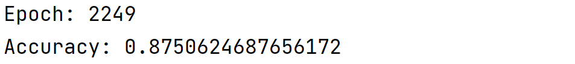
Batch = 64 — balanced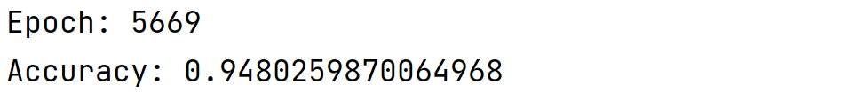
Batch = 128 — smootherActivation Functions
Compared ReLU, Sigmoid, and Tanh. ReLU suffered from "dead neurons" due to negative input values in the dataset. Sigmoid outperformed Tanh for this classification task.
Network Depth
Extended the baseline 2-layer network to a 6-layer deep network (NN_add_layer.py). The deeper architecture showed improved capacity for complex decision boundaries, though with increased risk of overfitting.
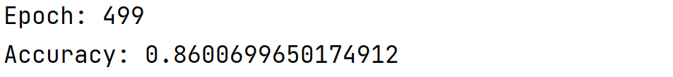
2-layer network (baseline)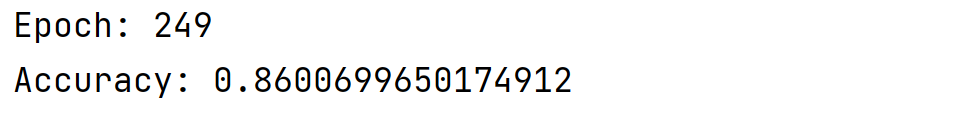
6-layer network (deeper)Newton's Method
I also implemented Newton's method for weight updates, which uses second-order information (Hessian matrix) to accelerate convergence. While computationally more expensive per iteration, it demonstrates faster convergence in regions where the Hessian is well-conditioned.
# Newton's method weight update
dw1 = gradient_w1
hessian1 = compute_hessian_w1()
hessian_inv1 = np.linalg.inv(hessian1)
self.w1 -= learning_rate * hessian_inv1.dot(dw1)
dw2 = gradient_w2
hessian2 = compute_hessian_w2()
hessian_inv2 = np.linalg.inv(hessian2)
self.w2 -= learning_rate * hessian_inv2.dot(dw2) Loss curve using Newton's method for optimization.
Loss curve using Newton's method for optimization.
3D Visualization
To understand the learned decision function, I visualized the network output as a 3D surface plot over the 2D input feature space, revealing how the classifier partitions the data into three distinct regions.
Code & Resources
The neural network implementation is available on GitHub:
The original course report (in French) is available here: